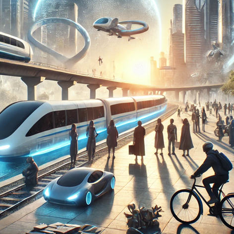

Essential professional and technical vocabulary covering operational concepts, analytical frameworks, and formal communication structures.

Aircraft utilizing distributed electric propulsion to take off and land vertically, designed for urban air mobility.
A safe and efficient aviation transit system for passenger and cargo transport across metropolitan airspace.
Drop-in bio-based or synthetic fuels compatible with existing turbines, reducing net carbon lifecycle emissions by up to 80%.
An electrochemical device combining hydrogen and oxygen to produce electricity with water vapor as the sole byproduct.
A dedicated airport facility designed specifically for vertical take-off and landing passenger aircraft operations.
The amount of energy stored per unit mass in an aviation battery or fuel, a critical metric for flight range.
Using multiple smaller electric motors distributed along wings to improve aerodynamic lift and acoustic efficiency.
Aircraft capable of cruising faster than the speed of sound (Mach 1.0) with low-boom aerodynamic profiling.
A sealed low-pressure tube transit system propelling levitating pods at near-aviation speeds using linear motors.
The geographic area exposed to aircraft noise levels during urban take-off, hover, and approach procedures.
Next-generation batteries employing solid electrolytes to achieve higher energy densities and reduced thermal runaway risk.
Insulated tanks storing liquid hydrogen fuel at sub-zero temperatures (-253°C) for commercial airliner propulsion.
A digital, automated air traffic architecture designed to coordinate thousands of low-altitude drones and eVTOLs.
Comprehensive evaluation of environmental impacts associated with raw material extraction through disposal.
Critical minerals (neodymium, cobalt) essential for high-performance electric motors and battery chemistries.
Synthetic fuels that require zero infrastructure modifications to existing airport fuel storage pipelines and engines.
An uncontrolled rapid temperature spike in a battery cell that triggers fire or explosion if not mitigated by safety enclosures.
A dimensionless quantity quantifying the resistance of an aircraft design moving through surrounding air.